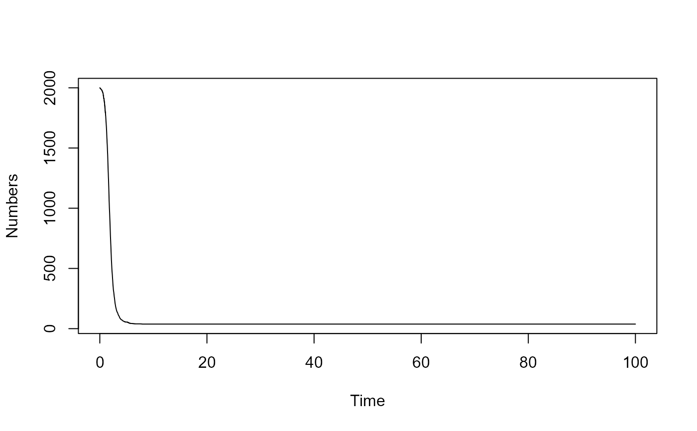

Drug Resistance Evolution
Source:R/simulate_Drug_Resistance_Evolution_stochastic.R
simulate_Drug_Resistance_Evolution_stochastic.RdAn SIR-type model that includes drug treatment and resistance.
Usage
simulate_Drug_Resistance_Evolution_stochastic(
S = 1000,
Iu = 1,
It = 1,
Ir = 1,
R = 0,
bu = 0.002,
bt = 0.002,
br = 0.002,
gu = 1,
gt = 1,
gr = 1,
f = 0,
cu = 0,
ct = 0,
tfinal = 100,
rngseed = 123
)Arguments
- S
: starting value for Susceptible : numeric
- Iu
: starting value for Infected Untreated : numeric
- It
: starting value for Infected Treated : numeric
- Ir
: starting value for Infected Resistant : numeric
- R
: starting value for Recovered : numeric
- bu
: untreated infection rate : numeric
- bt
: treated infection rate : numeric
- br
: resistant infection rate : numeric
- gu
: untreated recovery rate : numeric
- gt
: treated recovery rate : numeric
- gr
: resistant recovery rate : numeric
- f
: fraction treated : numeric
- cu
: resistance emergence untreated : numeric
- ct
: resistance emergence treated : numeric
- tfinal
: Final time of simulation : numeric
- rngseed
: set random number seed for reproducibility : numeric
Value
The function returns the output as a list.
The time-series from the simulation is returned as a dataframe saved as list element ts.
The ts dataframe has one column per compartment/variable. The first column is time.
Details
The model includes susceptible, infected untreated, treated and resistant, and recovered compartments. The processes which are modeled are infection, treatment, resistance generation and recovery.
This code was generated by the modelbuilder R package. The model is implemented as a set of stochastic equations using the adaptivetau package. The following R packages need to be loaded for the function to work: adpativetau
Warning
This function does not perform any error checking. So if you try to do something nonsensical (e.g. have negative values for parameters), the code will likely abort with an error message.
Examples
# To run the simulation with default parameters:
result <- simulate_Drug_Resistance_Evolution_stochastic()
# To choose values other than the standard one, specify them like this:
result <- simulate_Drug_Resistance_Evolution_stochastic(S = 2000,Iu = 2,It = 2,Ir = 2,R = 0)
# You can display or further process the result, like this:
plot(result$ts[,'time'],result$ts[,'S'],xlab='Time',ylab='Numbers',type='l')

print(paste('Max number of S: ',max(result$ts[,'S'])))
#> [1] "Max number of S: 2000"